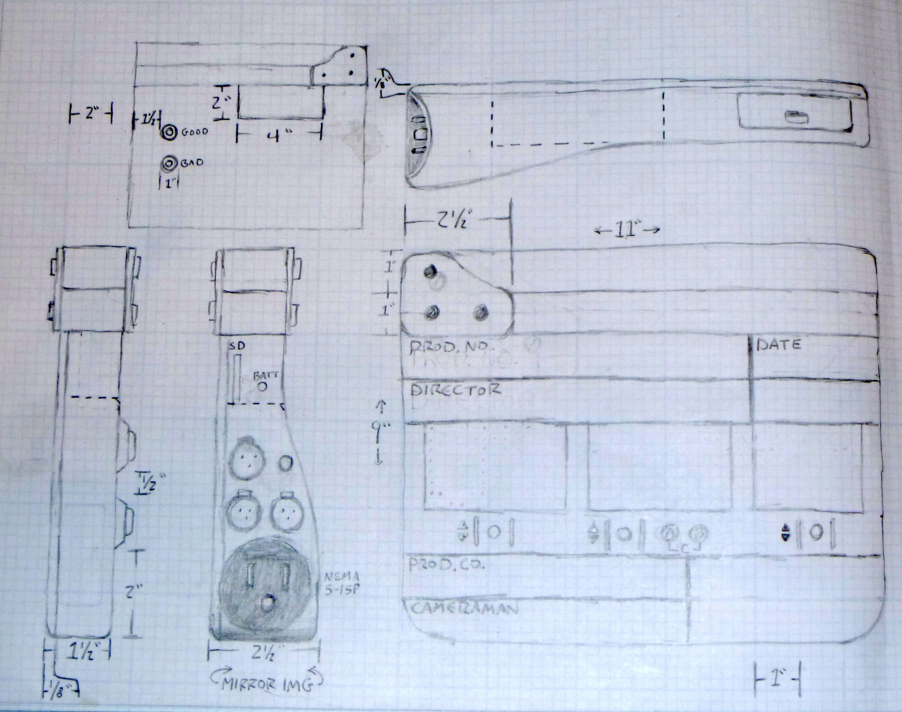

UuberSlate
Project Overview
Role: Product Designer & Developer
Context: Student project at Webster University
Focus: Hardware/software system for automated film slate and video organization
The Challenge
Film and video production relies on clapperboards (slates) to sync audio and video and organize footage by shot, scene, and take. However, the process of manually entering this metadata into video editing software is time-consuming and error-prone.
I wanted to create a system that could automatically capture slate information at the moment of the clapper slap and use it to organize footage without manual data entry.
Design Solution
I designed and built UuberSlate, an Arduino-based smart clapperboard that encodes shot/scene/take information into an audio signal played through a built-in speaker when the slate is slapped. Companion software analyzes video files during ingestion, detects the clapper slap sound, decodes the embedded metadata, and automatically organizes clips in video editing software.
Hardware Design
Product Sketch and Specifications
Hand-drawn technical sketch showing hardware layout, dimensions, and component placement
The hardware design integrated several key components into a traditional clapperboard form factor:
Key Hardware Components
- Arduino microcontroller - Controls the system and generates encoded audio signals
- LCD display - Shows current shot/scene/take information
- Speaker - Plays encoded audio signal when slate is clapped
- Control buttons - Allows operators to increment/adjust shot, scene, and take numbers
- Physical clapper mechanism - Traditional hinged clapper bar for visual/audio sync
- Compact housing - Ruggedized design suitable for on-set use
The sketch shows careful consideration of ergonomics, with controls positioned for easy one-handed operation and the display placed for clear visibility by both camera operators and editors reviewing footage.
Software Solution
Automated Video Analysis and Organization
The companion software analyzes video files during ingestion, searching for the distinctive clapper slap sound. When detected, it decodes the encoded audio signal containing the shot/scene/take metadata.
The software visualizes the audio waveform, allowing users to see where the clapper slap was detected (shown by the colored markers in the waveform). The decoded information is then used to automatically name and organize clips in the video editing software's project structure.
How It Works
- On Set: Operator enters shot/scene/take numbers using the hardware controls
- Recording: When the clapper is slapped, the Arduino generates an encoded audio tone containing the metadata
- Ingestion: Video files are imported into the companion software
- Analysis: Software scans audio tracks for the clapper slap signature and encoded data
- Decoding: Metadata is extracted from the audio signal
- Organization: Clips are automatically renamed and organized based on decoded information
Key Software Features
- Automatic detection of clapper slap sounds in video files
- Audio signal decoding to extract shot/scene/take metadata
- Visual waveform display showing detection points
- Batch processing of multiple video files
- Integration with video editing software project structures
- Error handling for clips where slate data cannot be decoded
Technical Innovation
The core innovation of UuberSlate was embedding metadata directly into the audio track at the moment of the clapper slap. This approach ensured that the metadata traveled with the video file and could be reliably extracted later, even if files were copied, renamed, or moved through different storage systems.
By encoding the information as audio tones rather than relying on timecode or external databases, the system remained simple, reliable, and compatible with any camera or recording device.
Impact
- Eliminated manual metadata entry during video ingestion
- Reduced organizational errors in footage management
- Saved significant time in post-production workflow
- Demonstrated practical application of hardware/software integration
- Showcased interdisciplinary skills in product design, electronics, and software development
- Completed as a student project, demonstrating initiative in solving real production problems